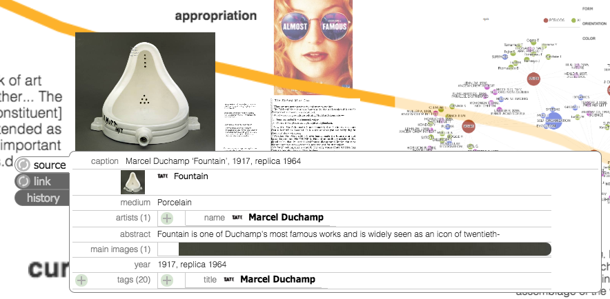

<style type="text/css">
    #ecoImg {
        padding: 10px;
        float: right;
    }
    #macheImg {
        padding: 10px;
        float: left;
        height: 140px;
    }
    #macheExImg {
        display: block;
        clear: both;
        margin-left: auto;
        margin-right: auto;
        width: 75%;
    }
    #secondTitle {
        clear: both;
    }
    #macheTip {
        margin-top: -290px;
    }
    @media (max-width: 560px) {
        h2 {
            font-size: 130%;
        }            
        #ecoImg {
            height: 110px;
        }            
        #macheImg {
            height: 100px;
        }
        #macheTip {
            display: none;
        }
    }
</style>

<article>  
    
    <h2>What we do</h2>
    <p>
    For the past two semesters, I have been an undergraduate researcher at the <a target="_blank" href="http://ecologylab.net/">Interface Ecology Lab</a>. Our lab focuses the way people create, explore, curate, and interact with digital media. To see some of what we do, I suggest checking out <a target="_blank" href="http://ecologylab.net/research/bigsemantics/MICE/">MICE</a> the Metadata in-context expander or <a target="_blank" href="http://ideamache.ecologylab.net/">IdeaMÂCHÉ</a>. </p>
    <p>MICE shows off the the meta-metadata language our lab has created. This language consists of extraction rules for web pages and a number of "wrappers" that utilize those rules to extract metadata from web pages. Each of these wrappers is a part of a type system. We call this entire architecture <a target="_blank" href="http://ecologylab.net/research/bigsemantics/index.html">BigSemantics</a>, and it is open <a target="_blank" href="https://github.com/ecologylab/BigSemantics">source</a>.
    </p>
    
    <p>
    IdeaMÂCHÉ is a tool that allows users to collect, organize, and share text, pictures, and links gathered from the web. Think Pinterest + Photoshop-lite. It is often used as a brainstorming tool or for presentations. It also takes advantage of BigSemantics and MICE, as each piece of web content has metadata associated with it that can be viewed from within a mache (shown in the screenshot below). If you try to view a mache, it will say you need a plugin, but feel free to go ahead. The plugin is only really neccessary if you want to create your own maches.  
    </P>
    <span class="tooltip">
        
        <span id="macheTip">In this mache, a user has dragged <br> in a photo of Duchamp's 'Fountain' <br> from the Tate modern website.</span>
    </span>
    <h2 id="secondTitle">What I do</h2>
    <p>I specifically have worked on a number of things during my time in the lab. I started by authoring wrappers for a number of art museum sites and some commerce sites. After that, I worked on calculating and visualizing usage statistics for IdeaMÂCHÉ using Javascript and D3. This was a part of an internal app that helps us understand the way people use the software. 
    </p>
    <p>
    Currently I am improving the <a target="_blank" href="https://chrome.google.com/webstore/detail/ideam%C3%A2ch%C3%A9-extension/elkanacmmmdgbnhdjopfdeafchmhecbf?hl=en-US">IdeaMÂCHÉ Chrome Extension</a>. I added functionality to extract metadata from pages on the client side, a process that previously required a call to a Java-based service. Doing things client side has a number of advantages, such as being able to see dynamically generated parts of the DOM. In addition, I am building a "Monadic Metadata Viewer" for my Undergraduate Research Thesis. This viewer utilizes BigSementics to visualize networks of linked metadata. The network is shown as physically-based model, where similar nodes are closer together on the screen. For a better idea of what monadic exploration/visualization is check out recent work by <a target="_blank" href="http://mariandoerk.de/monadicexploration/">Marian Dörk</a> and <a target="_blank" href="http://www.bruno-latour.fr/node/330">Bruno Latour</a>.
    </p>
</article>

